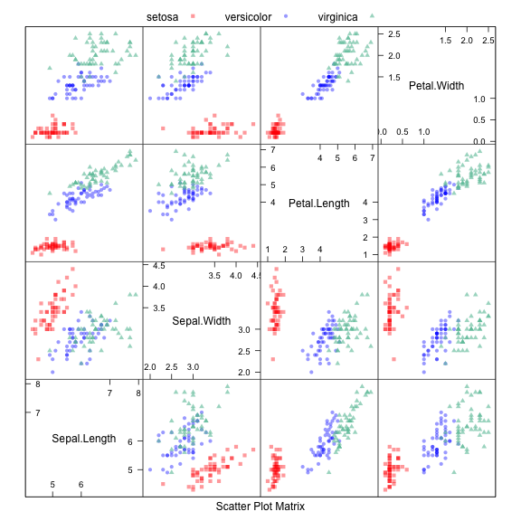
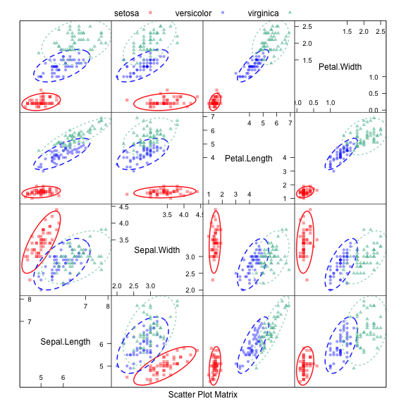
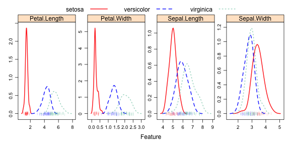
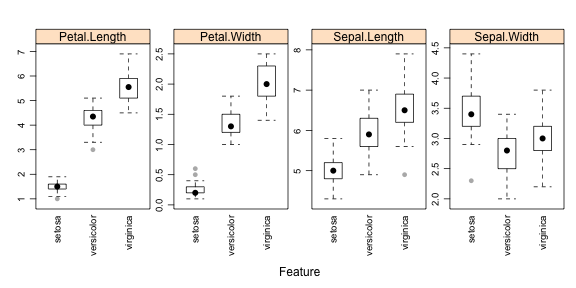
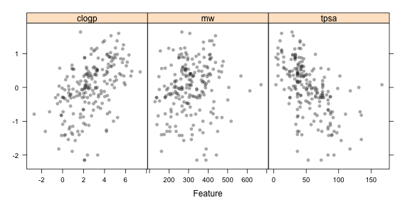
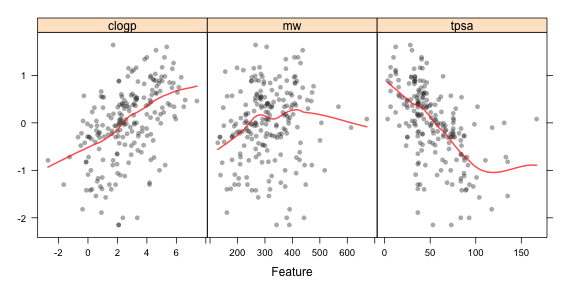

The featurePlot function is a wrapper for different
lattice plots to visualize the data. For example, the following figures show the default plot for continuous outcomes generated using the featurePlot function.
For classification data sets, the iris data are used for illustration.
'data.frame': 150 obs. of 5 variables:
$ Sepal.Length: num 5.1 4.9 4.7 4.6 5 5.4 4.6 5 4.4 4.9 ...
$ Sepal.Width : num 3.5 3 3.2 3.1 3.6 3.9 3.4 3.4 2.9 3.1 ...
$ Petal.Length: num 1.4 1.4 1.3 1.5 1.4 1.7 1.4 1.5 1.4 1.5 ...
$ Petal.Width : num 0.2 0.2 0.2 0.2 0.2 0.4 0.3 0.2 0.2 0.1 ...
$ Species : Factor w/ 3 levels "setosa","versicolor",..: 1 1 1 1 1 1 1 1 1 1 ...
Scatterplot Matrix

(click image for larger pdf)
Scatterplot Matrix with Ellipses

(click image for larger pdf)
Overlayed Density Plots

(click image for larger pdf)
Box Plots

(click image for larger pdf)
Scatter Plots
For regression, the blood-brain barrier data is used:
'data.frame': 208 obs. of 3 variables:
$ tpsa : num 12 49.3 50.5 37.4 37.4 ...
$ mw : num 155 151 365 382 325 ...
$ clogp: num 2.97 0.494 5.137 5.878 4.367 ...
When the predictors are continuous, featurePlot can
be used to create scatter plots of each of the predictors with the
outcome. For example:
produces the output below.

(click image for larger pdf)
Note that the x-axis scales are different. The function
automatically uses scales = list(y =
list(relation="free")) so you don't have to add it. We can also
pass in options to the lattice function
xyplot. For example, we can add a scatter plot smoother
by passing in new options:
The options degree and span control the
smoothness of the smoother.

(click image for larger pdf)